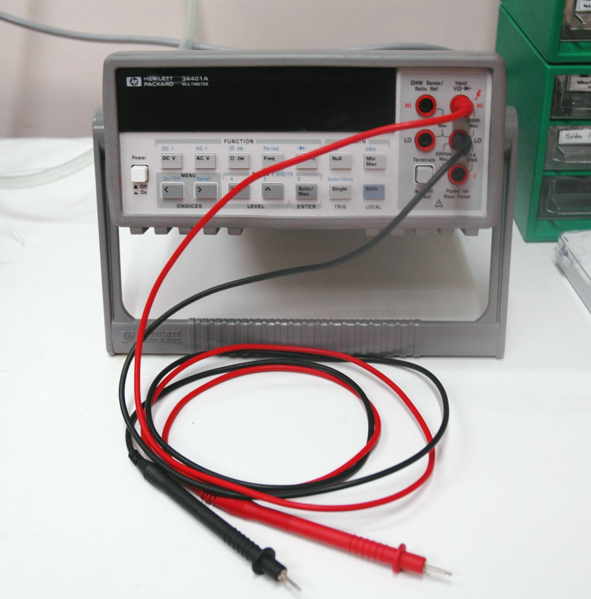

Measurement loading, tolerance and datasheets
A meter becomes part of the circuit. A datasheet number comes with conditions. Use both ideas to decide whether a reading is plausible or points to a fault.
The instrument is another component
Watch on YouTube · #68: Oscilloscope Probe Ground lead length effects on signal quality · w2aew
Look at the effect of the scope probe ground lead on a real waveform. Keep the probe arrangement in your measurement notes.
Replace the source and its resistor network with a Thévenin equivalent. Its open-circuit voltage is Vth and its series resistance is Rth. A voltmeter of input resistance Rin forms a divider with it.
A 5.00 V supply and two 1 MΩ resistors give 2.50 V open-circuit and Rth = 500 kΩ. A 10 MΩ meter reads about 2.38 V. A 1 MΩ input would give about 1.67 V. Oscilloscope probes also add capacitance, so their loading usually increases with frequency. An ammeter inserts a series shunt and has a burden voltage. For small current in a low-voltage circuit, measuring a known resistor’s drop can be easier to account for.
Display resolution and accuracy

Photo by Nuno Nogueira ( Nmnogueira ). Original photo · CC BY-SA 2.5.

A meter specification of ±(0.5% of reading + 2 counts) on a range with 0.01 V resolution gives ±(0.5% × 5.00 V + 0.02 V) = ±0.045 V at a 5.00 V reading, under the stated calibration and operating conditions. The last digit can move without the circuit changing. Treat loading, reference errors and component tolerances as separate effects. A divider made with two independent 1% resistors and exactly 5.00 V spans 2.475–2.525 V before the meter loads it.
Resistance and diode modes source a small test signal. In-circuit resistance includes parallel paths. Diode-mode readings depend on test polarity, current and the available paths. Compare like with like and record mode, range, polarity, reference and power state.
Measure where the load draws power
A connector can pass a continuity check and still fail under load. A 0.35 Ω contact drops only 0.35 mV at a 1 mA test current. Under a 1.50 A startup load it drops 0.525 V and dissipates about 0.79 W. If a controller resets when its motor starts, capture supply voltage at the driver and at the source on the same time base, then measure the drop across the positive path and return path under the same load. If the source holds up and one link drops voltage, investigate that link. If both rails dip together, investigate source impedance or current limiting.
A DMM averaging a startup event can miss the lowest voltage. Use its documented recording mode if that mode resolves the event, or use a scope single-shot on an isolated extra-low-voltage trainer. Check probe reference before connecting an earth-referenced scope. Measuring across a resistor with two grounded probe clips at different circuit potentials can short those points together. Use a suitable differential measurement setup for floating nodes. P15 · Scope setup and grounding.
Check how long an ADC can follow its input
On a 3.3 V, 12-bit ADC, one ideal step is approximately 0.806 mV. A changing value of two counts may be noise. The usable accuracy also depends on reference accuracy, input offset and gain errors, and settling. During acquisition a switch connects a sampling capacitor to the input. Source resistance plus switch resistance forms a charging path. The capacitor retains some history of the last channel until that charge moves.
With 20 pF and 50 kΩ total resistance, the time constant is 1 µs. The acquisition time for a full-scale step to settle within half an ideal 12-bit count is at least ln(2 × 4096) ≈ 9.01 time constants in this single-pole model. Use the target device’s timing and input model and leave room for other errors in the accuracy budget. In P172 · ADC sample settling, a reading changes direction when the previous channel is changed. A large external capacitor reduces that error and makes a separate sensor transition much slower.
Make a decision near a limit
A training supply must be at least 4.80 V at its load. Suppose the instrument’s stated bound at that range and reading is ±0.04 V, and other error sources are negligible. A reading of 4.82 V admits 4.78–4.86 V. Record it as inconclusive. A reading of 4.88 V clears the lower limit even at the lower end of the bound. A reading of 4.73 V fails even at the upper end. In a real acceptance plan, document the measurement method, uncertainty and decision rule before testing.
Three repeated readings under the same conditions tell you about short-term variation. Check bias using an independent reference or a second method. Evaluating both matters when a result is close to the limit. Keysight 34401A service guide · range, settling and burden specifications.
Read the right row
- Absolute maximum ratings describe stress limits. Use recommended operating conditions for design, then electrical characteristics for guaranteed behaviour under the stated test conditions.
- Typical helps predict a representative device. Use a specified minimum or maximum when the circuit must work across units or temperatures.
- Pinout and order code travel together. Verify package view, orientation, exact output-voltage suffix, exposed pad connection and allowed capacitors.
- Thermal limits depend on the board and airflow. A linear regulator dropping 5.0 V to 3.3 V at 0.20 A dissipates roughly 0.34 W before its small quiescent loss. Check how the package and layout move that heat.
For the fixed-output TLV755P, find the dropout row for the 3.3 V option, specific package and load current. The minimum input listed for the family describes the range of devices and conditions. Your output version still needs enough input-to-output headroom. TI TLV755P datasheet and package options.
Check yourself
The meter reads 2.38 V on a nominal 2.50 V divider. What measurement would test loading?
Use a lower-resistance divider with the same ratio and the same supply. The predicted loading falls. If the reading stays low, measure the supply and resistors and check for another load.
Practice P24 · Measure loading and read a regulator datasheet